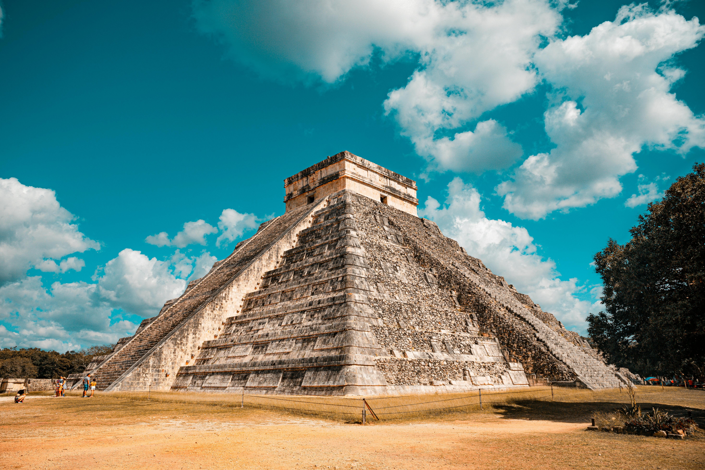
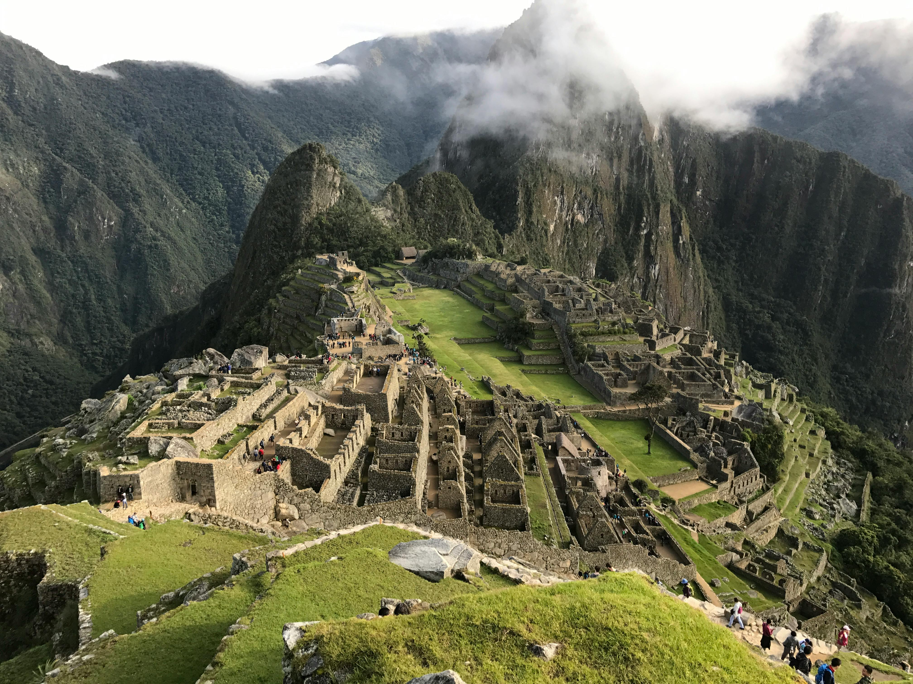
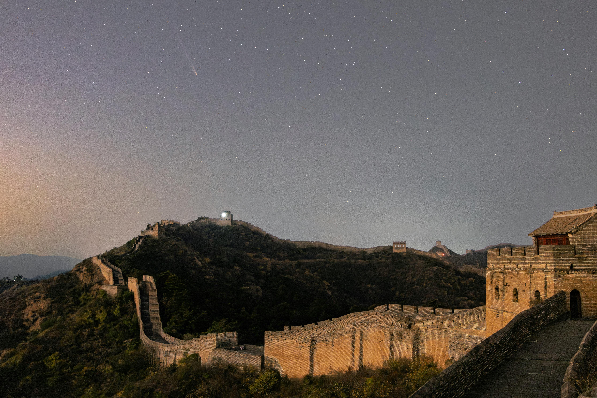

The Taj Mahal, located in Agra, India, is one of the most beautiful monuments in the world and a symbol of eternal love. It was commissioned in 1632 by the Mughal Emperor Shah Jahan in memory of his beloved wife, Mumtaz Mahal, who died during childbirth. The mausoleum took about 16 years to complete, employing thousands of artisans and craftsmen. Built of white marble, it features intricate carvings, calligraphy, and gemstone inlays. The central dome rises majestically, surrounded by four minarets, symbolizing perfect symmetry. The Taj Mahal is set within vast gardens with fountains and reflecting pools that enhance its beauty. Its design blends Persian, Islamic, and Indian architectural styles, making it a masterpiece of Mughal architecture. Inside the mausoleum lies the tomb of Mumtaz Mahal, alongside Shah Jahan’s tomb added later. The monument changes color depending on the time of day and moonlight, creating a magical effect. The Taj Mahal is not only a monument of love but also a testament to architectural innovation. In 1983, it was designated a UNESCO World Heritage Site. Millions of tourists visit annually, making it one of India’s most iconic landmarks. Despite pollution and environmental challenges, preservation efforts protect its marble and gardens. The Taj has inspired poets, artists, and lovers for centuries with its beauty. It stands as a reminder of the grandeur of the Mughal Empire. Its elegance and harmony have made it a universal symbol of devotion and art. Recognized as one of the New Seven Wonders of the World, it continues to enchant visitors from across the globe. The Taj Mahal truly embodies timeless love expressed in stone.

The Roman Colosseum, also known as the Flavian Amphitheatre, is one of the greatest architectural feats of ancient Rome. Completed in 80 AD under Emperor Titus, it could hold between 50,000 and 80,000 spectators. The Colosseum was primarily used for gladiatorial contests, animal hunts, mock naval battles, and dramatic performances. Built from concrete, stone, and iron clamps, it demonstrates Roman engineering brilliance. Its design included a complex system of vaults, underground chambers, and lifts for animals and stage effects. The Colosseum symbolized the power and wealth of the Roman Empire, showcasing entertainment on a grand scale. Spectators from different social classes gathered there, making it a unifying public space. Over time, the amphitheater suffered damage from earthquakes, fires, and stone scavenging for other buildings. Despite this, much of the structure still stands, attracting millions of visitors each year. In the medieval period, it was repurposed for housing, workshops, and even as a Christian shrine. Today, the Colosseum is a UNESCO World Heritage Site and one of Rome’s most visited attractions. Restoration efforts continue to preserve its grandeur for future generations. Its iconic arches and oval design have influenced stadiums worldwide. The Colosseum also serves as a reminder of the violence and spectacle of Roman society. Modern ceremonies and events are sometimes held there, connecting the past with the present. It is often lit at night as a global symbol against capital punishment. The Colosseum remains one of the most enduring symbols of Rome and Western civilization. It reflects both the brilliance and contradictions of an empire that valued culture, power, and spectacle.

Chichen Itza, located on Mexico’s Yucatán Peninsula, is one of the most famous cities of the ancient Maya civilization. Established around the 7th century, it became a major political, cultural, and religious center. The most iconic structure at Chichen Itza is El Castillo, or the Temple of Kukulkan, a pyramid built with extraordinary astronomical precision. Each side of the pyramid has 91 steps, totaling 365 with the top platform—representing the days of the solar year. During equinoxes, sunlight creates the illusion of a serpent slithering down the pyramid’s steps, reflecting Mayan astronomical expertise. The site also includes the Great Ball Court, the largest in Mesoamerica, where ritual games were played, often with symbolic or sacrificial meanings. Other significant structures are the Temple of Warriors, the Group of a Thousand Columns, and the Sacred Cenote, used for offerings and sacrifices. The architecture reflects a blend of Mayan and Toltec influences, showcasing cultural exchanges between civilizations. Chichen Itza thrived as a hub of knowledge, religion, and trade, influencing much of Mesoamerica. Today, it is recognized as a UNESCO World Heritage Site and one of the New Seven Wonders of the World. Millions of tourists visit annually, fascinated by its unique architecture and history. Archaeologists continue to uncover secrets about its design and rituals. The city’s decline remains partly mysterious, possibly due to drought or political shifts. Despite its fall, its monuments stand as enduring symbols of Mayan knowledge. Chichen Itza is a treasure that reveals the scientific, religious, and cultural depth of the ancient world. Its blend of architecture and astronomy makes it a wonder admired globally.

Machu Picchu, often called the “Lost City of the Incas,” is an ancient citadel located high in the Andes Mountains of Peru. Built in the 15th century by Emperor Pachacuti, it is believed to have served as a royal estate or sacred retreat for Incan rulers. The site was abandoned in the 16th century during the Spanish conquest but remarkably remained hidden from the outside world. It was rediscovered in 1911 by American historian Hiram Bingham, who brought international attention to this Incan masterpiece. Machu Picchu sits at an altitude of about 2,430 meters above sea level, surrounded by lush mountains and valleys. The architecture demonstrates advanced engineering, with stones so precisely cut and fitted that no mortar was needed. Temples, terraces, and palaces within the citadel reflect both religious and agricultural significance. Structures like the Intihuatana Stone, the Temple of the Sun, and the Room of the Three Windows hold great spiritual value. Its location also shows deep astronomical knowledge, aligning with solstices and other celestial events. The terraces prevented landslides and allowed farming in the mountainous terrain. Declared a UNESCO World Heritage Site in 1983, Machu Picchu attracts millions of visitors annually. It is accessible by train or by hiking the famous Inca Trail. Despite heavy tourism, preservation efforts ensure its protection. The site remains a symbol of Incan ingenuity, spirituality, and harmony with nature. Its mystical atmosphere continues to fascinate historians, archaeologists, and travelers. Machu Picchu is not only a wonder of architecture but also a wonder of cultural heritage. It is a timeless reminder of the brilliance of the Inca civilization.

Christ the Redeemer is an iconic statue of Jesus Christ located in Rio de Janeiro, Brazil. Standing 30 meters tall with arms stretching 28 meters wide, it is one of the largest art deco statues in the world. Built between 1922 and 1931, it was designed by Brazilian engineer Heitor da Silva Costa and sculpted by French artist Paul Landowski. The statue is made of reinforced concrete and covered with soapstone, chosen for its durability and smooth finish. Positioned atop Mount Corcovado, it overlooks the bustling city and its scenic beaches, offering breathtaking views of Rio. Christ the Redeemer is more than just a statue; it is a symbol of peace, faith, and hope for people worldwide. It was constructed to celebrate Brazil’s centennial of independence from Portugal. The monument has become a national icon and one of the most recognized landmarks globally. Tourists reach the site by train, road, or hiking trails, and at the base, they find a viewing platform. The statue is frequently struck by lightning, and although parts have been damaged, it is regularly repaired. In 2007, it was declared one of the New Seven Wonders of the World. During significant events, the statue is illuminated with colorful lights, making it even more spectacular at night. Pilgrims often view it as a sacred site, while others admire its artistic and architectural brilliance. Its elevated position and open arms symbolize universal love and acceptance. Christ the Redeemer has been featured in countless films, photographs, and cultural works. Today, it remains one of the most visited monuments in South America, blending spirituality with architectural magnificence.

Petra, located in southern Jordan, is an ancient city carved directly into rose-red sandstone cliffs, earning it the nickname “Rose City.” Founded by the Nabataeans around 300 BC, it served as their capital and flourished as a hub for trade routes connecting Arabia, Egypt, and the Mediterranean. Petra’s most famous structure, Al-Khazneh or the Treasury, is an elaborate façade believed to be a royal tomb or temple. The city also contains amphitheaters, temples, and over 800 carved structures that reflect the Nabataeans’ advanced architecture. One of the city’s marvels was its sophisticated water management system, with channels, cisterns, and dams to survive in the desert climate. This engineering brilliance allowed Petra to thrive despite being surrounded by arid lands. The city was largely unknown to the Western world until it was rediscovered in 1812 by Swiss explorer Johann Burckhardt. Over time, earthquakes and changes in trade routes caused Petra’s decline, leaving it abandoned for centuries. Today, it is recognized as a UNESCO World Heritage Site and one of the New Seven Wonders of the World. Walking through the Siq, a narrow gorge that leads into the city, visitors are amazed by the sudden view of the Treasury. The Monastery, another grand structure, lies further uphill and is even larger than the Treasury. Petra’s unique blend of natural beauty and human craftsmanship continues to inspire archaeologists, historians, and travelers alike. It is also a cultural symbol of Jordan, often featured in films and literature. The “Rose City” remains a timeless reminder of the ingenuity and artistry of ancient civilizations.

The Great Wall of China is one of the most remarkable achievements in human history, stretching over 21,000 kilometers across northern China. Construction began as early as the 7th century BC, but most of the existing wall was built during the Ming Dynasty (1368–1644). The wall was created to protect Chinese states and empires from nomadic invasions, particularly from the Mongols. It was built using stone, brick, tamped earth, wood, and other materials depending on the terrain. Watchtowers, fortresses, and beacon towers were placed at intervals for defense and communication. Soldiers used these towers to spot enemies and send smoke signals. Apart from military use, the wall also regulated trade along the Silk Road by collecting taxes and monitoring goods. The Great Wall demonstrates the extraordinary labor and dedication of millions of workers, many of whom lost their lives during construction. It is not a single continuous wall but rather a series of connected and overlapping walls built over centuries. Its winding path runs through deserts, mountains, valleys, and plateaus, making it a marvel of engineering. Tourists today walk on restored sections like Badaling and Mutianyu near Beijing. UNESCO recognized it as a World Heritage Site in 1987. Legends say the wall is visible from space, though this is not entirely true. Still, its sheer length and grandeur make it a global symbol of perseverance. The Great Wall stands as a testimony to China’s historical strength, cultural pride, and architectural skill. It is truly a wonder that combines human effort with natural landscapes in one continuous masterpiece.